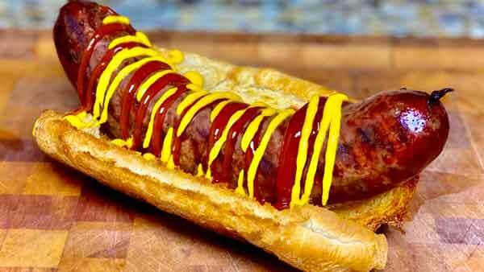

Hotdog
Return to Homepage

Description
Seriously, this is just a plain ol' hotdog. You can spice it up anyway you like.
This recipe is almost impossible to mess up. If you can boil water and cut toppings, then you can make a
really good hotdog. I recommend a natural casing hotdog with mustard, a Claussen pickle, and hot peppers, on a seaseme seed bun.
Ingredients
- A package of your favorite hotdog brand
- Buns of your choice
- Any condiments or toppings you like
Steps
- Cut or dice up any toppings you would like
- Boil or grill Hotdog until warm throughout
- Place warm hotdog in bun and cover in toppings or condiments
- Serve warm and Enjoy!
Return to Homepage